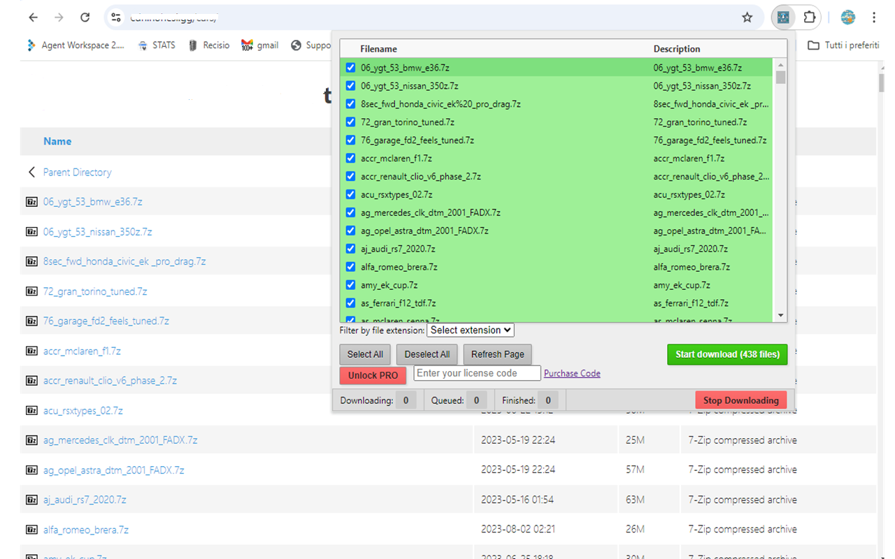
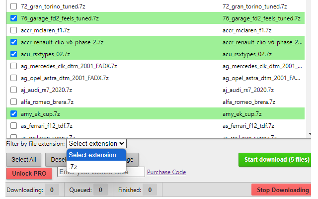

Batch link downloader | All Links Downloader
Ever found yourself on a webpage loaded with links and wished you could just download them all at once without right-clicking like a caveman Thats exactly what All Links Downloader was built for. Whether you're scraping resources, gathering references, downloading videos, or grabbing files, this Batch link downloader is your one-click Swiss Army knife for extracting links from any webpage.
The best part You dont need to be a coder or know your way around dev tools. Just install the extension, visit any page, click the icon, and boom it gives you a clean, categorized list of every link it can find. From documents to images to media files and more, it sorts and shows them all in a user-friendly panel. You can select all or filter by type (PDFs, MP4s, JPGs you name it), and then download them in bulk or copy them to your clipboard.
This is perfect for researchers, content creators, students collecting reading lists, or anyone whos tired of clicking links one by one like its 1999. If you're managing a project and need to grab a batch of downloadable links from a resource hub or Google Drive listing, this tool will save you hours.
📄How to Use
- Install this Batch link downloader from the Chrome Web Store.
- Visit any webpage containing links.
- Click the All Links Downloader icon in your browser toolbar.
- Browse the list of detected links and filter by file type if needed.
- Select the links you want and hit "Download" or "Copy."
📷 Screenshots Batch link downloader


✅ Features
- Scans and extracts all links from any webpage
- Filter links by file type (image, video, document, etc.)
- Bulk download or export to clipboard
- Clean interface with one-click access
- Fast, secure, and ad-free
Say goodbye to manual link hunting. Install All Links Downloader (Batch link downloader) and let it do the heavy lifting while you sip your coffee .
View Batch link downloader on Chrome Web Store